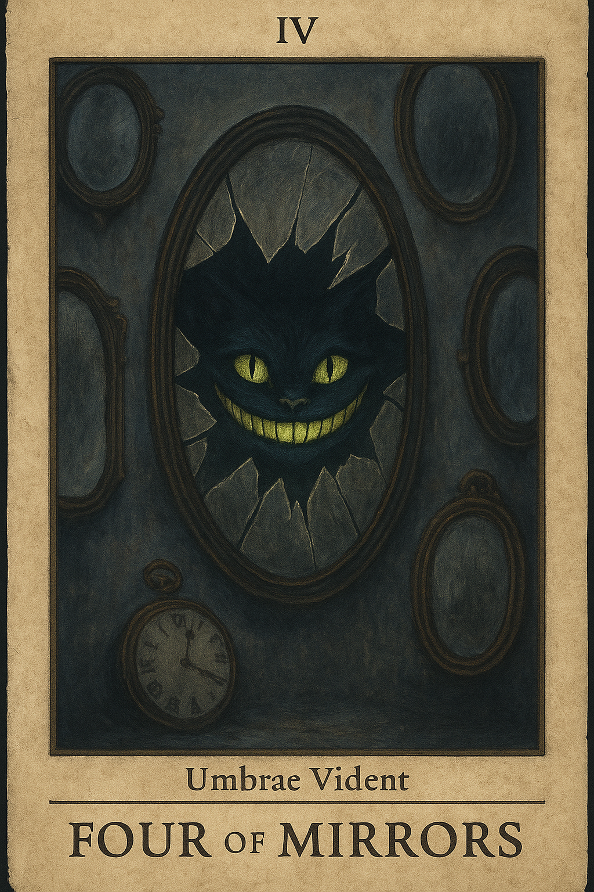
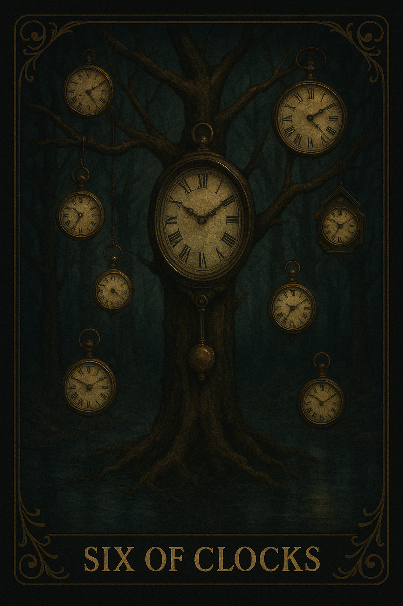
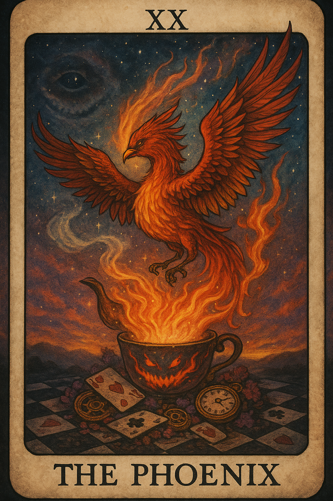
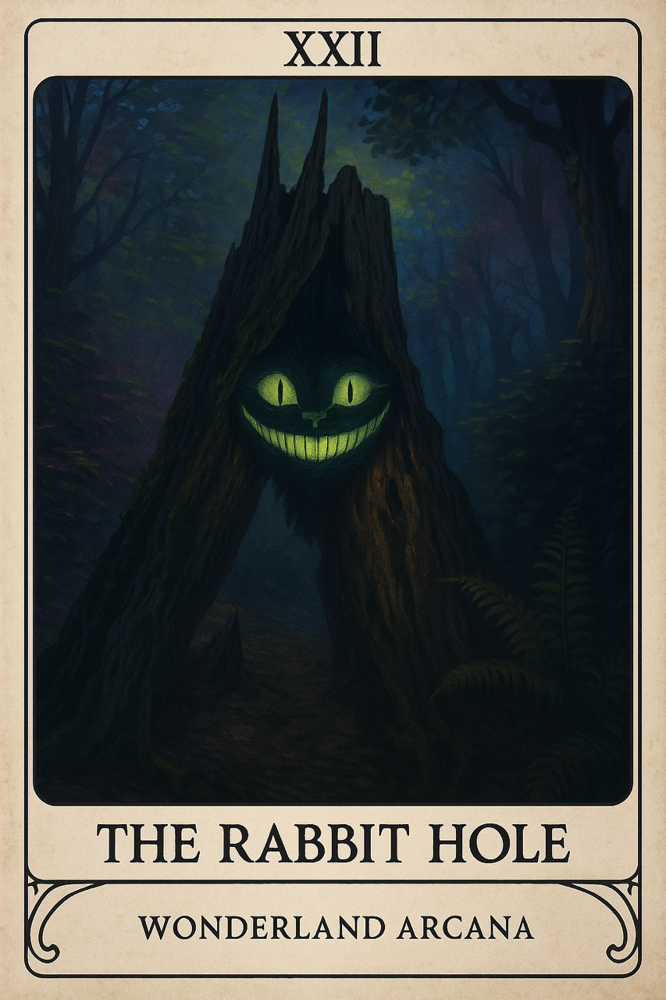
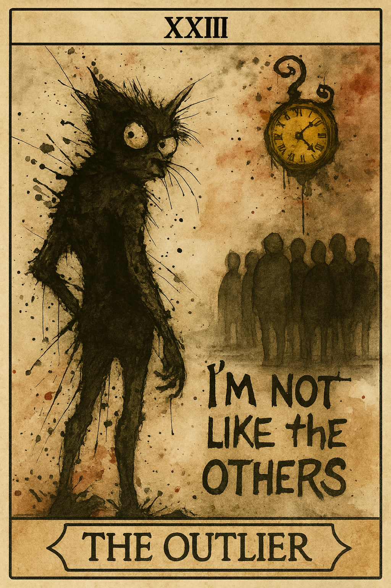
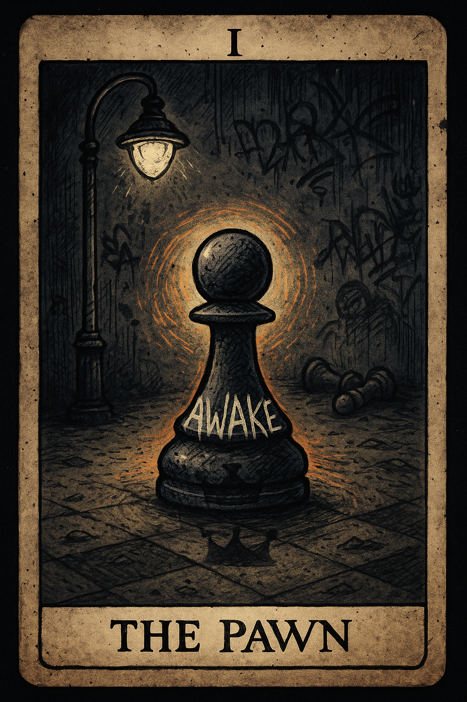
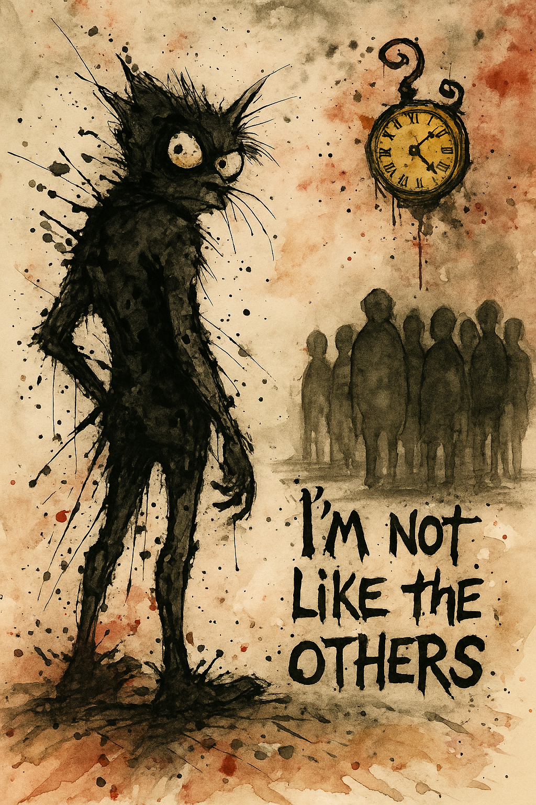

The Black Book
The structure of the theory
The psychological model, the Integration Cycle, archetypal dynamics, synchronic feedback, and the relationship between the psyche and the world it interprets.
Books, philosophy, and symbolic systems
Synchronic Self Theory isn’t confined to one book or one practice. It’s being developed through philosophical work, lived experience, original tarot, and symbolic systems designed to leave room for the reader’s own reflection.
From Theory to Experience
The projects developed through Synchronic Self Theory explore the relationship between inner psychology and outer experience. Some explain the framework. Others examine what happens when that framework is lived rather than merely understood.
Together, the books and tarot system form different entrances into the same question: what happens when consciousness recognizes itself through the patterns it encounters?
The theory, structure, and psychological architecture of the Synchronic Self.
The Theory
The Black Book is the theoretical foundation of Synchronic Self Theory. It maps the psyche as a self-regulating system shaped by perception, projection, recognition, and reintegration.
The book examines synchronicity as conscious feedback, drawing from Jungian psychology, archetypal systems, reflective dialogue, and lived observation. It isn’t presented as doctrine, revelation, or an instruction to assign supernatural meaning to every coincidence.
Instead, it asks readers to consider how internal patterns shape the world they perceive, how relationships become mirrors, and how recognizing projection can move the psyche toward greater coherence.
The Black Book establishes the Integration Cycle, the Synchronic Field, the archetypal ecosystem, and the relationship between inner state and outer reflection. It’s the framework beneath the philosophy.
The lived experience of practicing the theory while still inside the world it describes.
The Experience
If The Black Book is the theory, The Yellow Book will be the lived experience.
It’ll explore what happens after the framework has been understood and the work has to continue in ordinary life. Insight doesn’t remove conflict, uncertainty, attachment, ambition, grief, or contradiction. It changes how those experiences are recognized and carried.
The Yellow Book won’t attempt to prove the theory again. It’ll document the tension between understanding a pattern intellectually and embodying that understanding through decisions, relationships, work, survival, and creative practice.
The companion book will focus on the part no clean diagram can fully capture: how integration behaves when life keeps moving, the mirror keeps answering, and the person looking into it is still changing.
Two Parts of One Work
The Black Book
The psychological model, the Integration Cycle, archetypal dynamics, synchronic feedback, and the relationship between the psyche and the world it interprets.
The Yellow Book
What the framework looks like when it moves out of abstraction and into relationships, uncertainty, survival, creativity, choice, contradiction, and continued individuation.
An Expanded Jungian Tarot System
The Mirror’s Edge Tarot translates Synchronic Self Theory into an original symbolic system rooted in Wonderland, individuation, paradox, projection, shadow, and the relationship between the dreamer and the dream.
It isn’t a standard tarot deck with Wonderland characters placed over familiar meanings. The structure has been rebuilt around a Jungian journey through reflection, fragmentation, descent, recognition, and post-individuation.
The traditional suits become Mirrors, Keys, Hats, Crowns, and Clocks. Each explores a different realm of experience, including perception, will, emotion, embodiment, and synchronicity.



Beyond the Traditional Arcana
The Mirror’s Edge Tarot includes additional arcana because individuation doesn’t end at completion. The deck continues beyond the familiar sequence to explore descent and the changed identity that emerges after integration.

XXII
The Rabbit Hole represents the Jungian descent into madness. It’s the movement beneath the conscious surface, where familiar structures stop functioning and the seeker enters the disorienting territory of shadow, symbolism, contradiction, and unconscious material.
This isn’t madness treated as spectacle or failure. It’s the dangerous descent that may become transformative when the seeker remains capable of recognition, grounding, and return.

XXIII
The Outlier represents post-individuation: the realization that you’re no longer the same as everybody else, and that returning to your former identity would require abandoning what you’ve integrated.
It isn’t a card of superiority. It’s a card of difference consciously accepted. The seeker has returned from the descent, but can’t pretend the journey didn’t change how they see themselves, other people, or the world.
Two Beginnings
A pawn can appear powerless at the beginning of the game, but it’s also the only piece capable of becoming something entirely different. The two Pawn cards represent opposite directions of initiation.
One journey begins through awakening: becoming conscious of the board, the rules, and the possibility of transformation. The other begins through rebellion: rejecting the assigned role, resisting the system, and moving through experience by refusing to remain what the board expects.

The Awakened Pawn
This Pawn begins by waking up inside the system. The seeker recognizes that they’re both player and piece, subject to the board while still capable of conscious movement.
Its journey is shaped by awareness, observation, and the gradual realization that innocence doesn’t have to mean blindness.

The Rebel Pawn
This Pawn begins by rejecting the role it’s been given. The seeker doesn’t awaken through cooperation with the board, but through resistance to its assumptions, expectations, and inherited rules.
Its journey is less orderly and more confrontational, but the destination remains transformation. Rebellion becomes useful when it breaks false structure without becoming another identity prison.
Visual Development
The artwork is being developed across multiple visual approaches while the symbolic system, card structure, and guidebook continue taking shape.

Work in Progress
The Black Book, The Yellow Book, and The Mirror’s Edge Tarot are being developed as connected but distinct expressions of Synchronic Self Theory. Updates, essays, visual development, and future publication information will be shared through the journal.
Visit the Journal